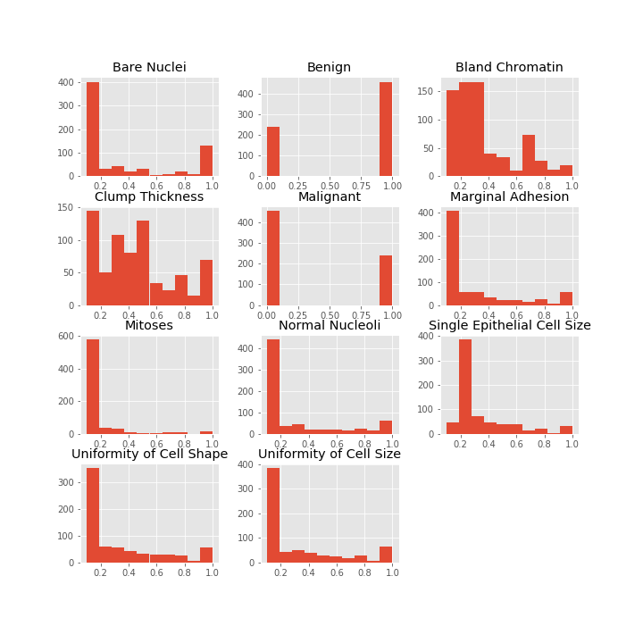
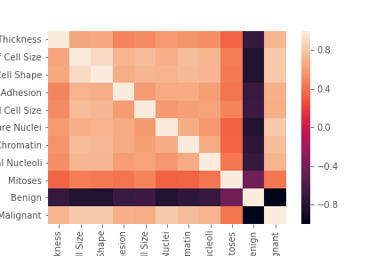
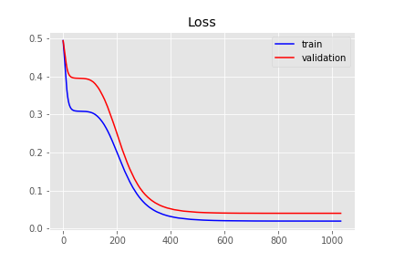
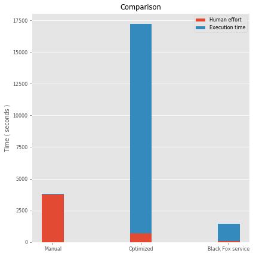
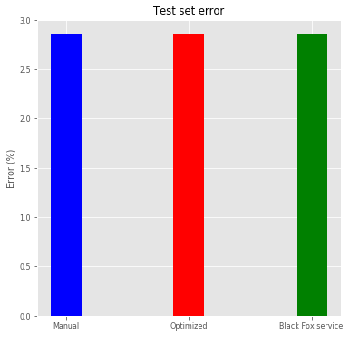

Cancer
Problem explanation:
Like other cancers, breast cancer is an uncontrolled growth of breast cells. Breast cancer occurs as a result of abnormal changes or mutation in the genes responsible for regulating the healthy growth of breast. The genes are in each cell’s nucleus, which acts as the “controller” of concern cell.
This abnormal tumour-like growth can be benign (not cancerous) or malignant (cancerous property). Benign tumours are close to normal in appearance, they grow comparatively slowly, and they do not invade or spread to nearby tissue and other parts of the body. As malignant cells have the potential to grow as cancer If they are left unchecked or untreated, they eventually can spread to nearby tissue and beyond an original tumour to other parts of the body. We need to classify a tumor as either benign or malignant based on cell descriptions gathered by microscopic examination. The data was originally obtained from the University of Wisconsin Hospitals, Madison, from Dr. William H. Wolberg. Data set has 699 observations, all inputs are continuous, 65.5% of the examples are benign. The dataset itself is located here, in the field cancer.
This is classification problem and the results are two outputs, benign or malign. Model inputs are:
- Clump thickness,
- Uniformity of cell size,
- Uniformiti of cell shape,
- Marginal adhesion,
- Single epithelial cell size,
- Bare nuclei,
- Bland chromatin,
- Normal nucleoli,
- Mitoses.
Problem solution:
Data set contains only 699 observations, so it is relatively small data set. We have divided the data set in two sets, training set, which contains 599 observations and test set, which contains 100 observations. We solved problem in three ways:
- Manually buiilding ANN,
- Tune some hyperparameters by using grid search and
- Employing Black Fox service.
We evaluate the performance of the models using K-fold cross validation. For the purpose of feature scaling, we apply a min max scaler. To stop the training at the right time, Keras’ early stopping scheme is applied.
Update Keras to latest version:
!pip install keras==2.2.4
Collecting keras==2.2.4
[?25l Downloading https://files.pythonhosted.org/packages/5e/10/aa32dad071ce52b5502266b5c659451cfd6ffcbf14e6c8c4f16c0ff5aaab/Keras-2.2.4-py2.py3-none-any.whl (312kB)
[K 100% |████████████████████████████████| 317kB 10.2MB/s ta 0:00:01
[?25hRequirement already satisfied: six>=1.9.0 in /home/nbuser/anaconda3_501/lib/python3.6/site-packages (from keras==2.2.4) (1.11.0)
Requirement already satisfied: keras-preprocessing>=1.0.5 in /home/nbuser/anaconda3_501/lib/python3.6/site-packages (from keras==2.2.4) (1.0.9)
Requirement already satisfied: scipy>=0.14 in /home/nbuser/anaconda3_501/lib/python3.6/site-packages (from keras==2.2.4) (1.1.0)
Requirement already satisfied: keras-applications>=1.0.6 in /home/nbuser/anaconda3_501/lib/python3.6/site-packages (from keras==2.2.4) (1.0.7)
Requirement already satisfied: h5py in /home/nbuser/anaconda3_501/lib/python3.6/site-packages (from keras==2.2.4) (2.8.0)
Requirement already satisfied: numpy>=1.9.1 in /home/nbuser/anaconda3_501/lib/python3.6/site-packages (from keras==2.2.4) (1.14.6)
Requirement already satisfied: pyyaml in /home/nbuser/anaconda3_501/lib/python3.6/site-packages (from keras==2.2.4) (3.13)
Installing collected packages: keras
Found existing installation: Keras 2.2.2
Uninstalling Keras-2.2.2:
Successfully uninstalled Keras-2.2.2
Successfully installed keras-2.2.4
Data preprocessing
Importing data frame
# Importing the libraries
import numpy as np
import matplotlib.pyplot as plt
import pandas as pd
import seaborn as sns
import matplotlib as mpl
plt.style.use('ggplot')
# Importing the date as data frame wich we will import with pandas using the read_csv function.
dataframe = pd.read_csv('CancerData.csv')
Dataset info
dataframe.info()
<class 'pandas.core.frame.DataFrame'>
RangeIndex: 699 entries, 0 to 698
Data columns (total 11 columns):
Clump Thickness 699 non-null float64
Uniformity of Cell Size 699 non-null float64
Uniformity of Cell Shape 699 non-null float64
Marginal Adhesion 699 non-null float64
Single Epithelial Cell Size 699 non-null float64
Bare Nuclei 699 non-null float64
Bland Chromatin 699 non-null float64
Normal Nucleoli 699 non-null float64
Mitoses 699 non-null float64
Benign 699 non-null int64
Malignant 699 non-null int64
dtypes: float64(9), int64(2)
memory usage: 60.1 KB
Dataset description
dataframe.describe()
| Clump Thickness | Uniformity of Cell Size | Uniformity of Cell Shape | Marginal Adhesion | Single Epithelial Cell Size | Bare Nuclei | Bland Chromatin | Normal Nucleoli | Mitoses | Benign | Malignant | |
|---|---|---|---|---|---|---|---|---|---|---|---|
| count | 699.000000 | 699.000000 | 699.000000 | 699.000000 | 699.000000 | 699.000000 | 699.000000 | 699.000000 | 699.000000 | 699.000000 | 699.000000 |
| mean | 0.441774 | 0.313448 | 0.320744 | 0.280687 | 0.321602 | 0.354363 | 0.343777 | 0.286695 | 0.158941 | 0.655222 | 0.344778 |
| std | 0.281574 | 0.305146 | 0.297191 | 0.285538 | 0.221430 | 0.360186 | 0.243836 | 0.305363 | 0.171508 | 0.475636 | 0.475636 |
| min | 0.100000 | 0.100000 | 0.100000 | 0.100000 | 0.100000 | 0.100000 | 0.100000 | 0.100000 | 0.100000 | 0.000000 | 0.000000 |
| 25% | 0.200000 | 0.100000 | 0.100000 | 0.100000 | 0.200000 | 0.100000 | 0.200000 | 0.100000 | 0.100000 | 0.000000 | 0.000000 |
| 50% | 0.400000 | 0.100000 | 0.100000 | 0.100000 | 0.200000 | 0.100000 | 0.300000 | 0.100000 | 0.100000 | 1.000000 | 0.000000 |
| 75% | 0.600000 | 0.500000 | 0.500000 | 0.400000 | 0.400000 | 0.500000 | 0.500000 | 0.400000 | 0.100000 | 1.000000 | 1.000000 |
| max | 1.000000 | 1.000000 | 1.000000 | 1.000000 | 1.000000 | 1.000000 | 1.000000 | 1.000000 | 1.000000 | 1.000000 | 1.000000 |
Histograms of the numerical features
dataframe.hist(figsize=(10,10));

Corelation heatmap
sns.heatmap(dataframe.corr(), vmin=0, vmax=1);

Separate the data frame into feature matrix X and dependent variable y
X = dataframe.iloc[:, 0:9].values
y = dataframe.iloc[:, 9:11].values
Split the entire data set into the training set and test set
from sklearn.model_selection import train_test_split
X_train, X_test, y_train, y_test = train_test_split(X, y, test_size = 0.05, random_state = 1)
Option 1 - manually build ANN using Keras
import keras
from keras.models import Sequential
from keras.layers import Dense,Dropout
from keras.callbacks import Callback, TensorBoard, ModelCheckpoint
from keras.callbacks import EarlyStopping
import time
start1 = time.time()
classifier = Sequential()
classifier.add(Dense(units = 9, kernel_initializer = 'uniform', activation = 'sigmoid', input_dim = 9))
classifier.add(Dense(units = 9, kernel_initializer = 'uniform', activation = 'sigmoid'))
classifier.add(Dense(units = 9, kernel_initializer = 'uniform', activation = 'sigmoid'))
classifier.add(Dense(units = 2, kernel_initializer = 'uniform', activation = 'sigmoid'))
es = EarlyStopping(monitor = 'val_loss',
mode = 'auto',
#min_delta = 1e-2,
patience = 150,
verbose = 1,
#baseline=0.4,
restore_best_weights = True
)
classifier.compile(optimizer = 'rmsprop', loss = 'mean_absolute_error', metrics = ['accuracy'])
classifier.fit(x = X_train, y = y_train, validation_split = 0.3, batch_size = 32, epochs = 3000, callbacks = [es], verbose=1)
end1 = time.time()
time1 = int(end1-start1)
minutes1, seconds1= divmod(time1, 60)
hours1, minutes1= divmod(minutes1, 60)
Using TensorFlow backend.
Train on 464 samples, validate on 200 samples
Epoch 1/3000
464/464 [==============================] - 1s 1ms/step - loss: 0.4946 - acc: 0.6659 - val_loss: 0.4939 - val_acc: 0.6050
Epoch 2/3000
464/464 [==============================] - 0s 109us/step - loss: 0.4853 - acc: 0.6918 - val_loss: 0.4895 - val_acc: 0.6050
Epoch 3/3000
464/464 [==============================] - 0s 128us/step - loss: 0.4772 - acc: 0.6918 - val_loss: 0.4850 - val_acc: 0.6050
.
.
.
Epoch 1033/3000
464/464 [==============================] - 0s 66us/step - loss: 0.0194 - acc: 0.9806 - val_loss: 0.0400 - val_acc: 0.9600
Epoch 1034/3000
464/464 [==============================] - 0s 69us/step - loss: 0.0194 - acc: 0.9806 - val_loss: 0.0400 - val_acc: 0.9600
Epoch 1035/3000
464/464 [==============================] - 0s 69us/step - loss: 0.0194 - acc: 0.9806 - val_loss: 0.0400 - val_acc: 0.9600
Restoring model weights from the end of the best epoch
Epoch 01035: early stopping
Plot loss during training
plt.title('Loss')
plt.plot(classifier.history.history['loss'], label = 'train', color = 'blue', linewidth=1)
plt.plot(classifier.history.history['val_loss'], label = 'validation', color = 'red', linewidth=1)
plt.legend()
plt.show()

Plot accuracy during training
plt.title('Accuracy')
plt.plot(classifier.history.history['acc'], label='train', color = 'blue', linewidth=1)
plt.plot(classifier.history.history['val_acc'], label='validation', color = 'red', linewidth=1)
plt.legend()
plt.show()

We just trained our artificial neural network on the training set and now it’s time to make the prediction on the test set
y_pred_trained = classifier.predict(X_test)
#print("Predicted values are:\n\n", y_pred_trained[:10,:])
y_pred_for_confusionMatrix = (y_pred_trained[:,0] > y_pred_trained[:,1])
y_pred_for_confusionMatrix = np.where(y_pred_for_confusionMatrix == True, 1, 0)
y_test_for_confusionMatrix = (y_test[:,0] > y_test[:,1])
y_test_for_confusionMatrix = np.where(y_test_for_confusionMatrix == True, 1, 0)
from sklearn.metrics import confusion_matrix
cm = confusion_matrix(y_pred_for_confusionMatrix, y_test_for_confusionMatrix)
errorOnTestSetTrained = 100*(cm[0,1]+cm[1,0])/y_test.shape[0]
print("\nTime to manually train one network is ", time1,"seconds(",hours1,"hours,",minutes1,"minutes and ",seconds1,"seconds ).")
print("\nWe got confusion matrix:\n",cm)
print("\nTest set error on manually train one network, which we can read in confusion matrix is",errorOnTestSetTrained,"%.")
Time to manually train one network is 52 seconds( 0 hours, 0 minutes and 52 seconds ).
We got confusion matrix:
[[19 1]
[ 0 15]]
Test set error on manually train one network, which we can read in confusion matrix is 2.857142857142857 %.
Option 2 - Parameter tuning by Grid search
We have two type of model parameters, the weights obtained during training process, and parameters that stay fixed, called the hyperparameters. The examples of th hyperparameters are number of epochs, batch size, type of optimizer, number of layers, the number of neurons layers etc. The ANN trained in Option 1 used fixed values of these hyperparameters, but perhaps some other values would lead us to a better accuracy.
The parameter tuning is all about finding the best values of the hyperparameters. We will try this using a simple technique called Grid search that will test several combinations of hyperparameter and return the best choice that leads to the best accuracy obtained by K-fold cross validation.
from keras.wrappers.scikit_learn import KerasClassifier
from sklearn.model_selection import GridSearchCV
from keras.models import Sequential
from keras.layers import Dense
import time
start2 = time.time()
def build_classifier(optimizer):
classifier = Sequential()
classifier.add(Dense(units = 9, kernel_initializer = 'uniform', activation = 'sigmoid', input_dim = 9))
classifier.add(Dense(units = 9, kernel_initializer = 'uniform', activation = 'sigmoid'))
classifier.add(Dense(units = 9, kernel_initializer = 'uniform', activation = 'sigmoid'))
classifier.add(Dense(units = 2, kernel_initializer = 'uniform', activation = 'sigmoid'))
classifier.compile(optimizer = optimizer, loss = 'mean_absolute_error', metrics = ['accuracy'])
return classifier
Tuning_classifier = KerasClassifier(build_fn = build_classifier)
parameters = {'batch_size' : [25, 32],
'epochs' : [100, 500, 3000],
'optimizer' : ['adam','rmsprop']}
grid_search = GridSearchCV(estimator=Tuning_classifier,
param_grid=parameters,
#scoring='accurasy',
cv=10
)
grid_search = grid_search.fit(X_train, y_train)
best_parameters = grid_search.best_params_
best_accuracy = grid_search.best_score_
print("Best parameters are :\n", best_parameters)
print("\nBest accuracy is :\n", best_accuracy)
end2 = time.time()
time2 = int(end2-start2)
minutes2, seconds2= divmod(time2, 60)
hours2, minutes2= divmod(minutes2, 60)
Epoch 1/100
597/597 [==============================] - 0s 655us/step - loss: 0.4939 - acc: 0.6566
Epoch 2/100
597/597 [==============================] - 0s 72us/step - loss: 0.4840 - acc: 0.6566
Epoch 3/100
597/597 [==============================] - 0s 115us/step - loss: 0.4733 - acc: 0.6566
.
.
.
Epoch 2998/3000
664/664 [==============================] - 0s 303us/step - loss: 0.0211 - acc: 0.9789
Epoch 2999/3000
664/664 [==============================] - 0s 364us/step - loss: 0.0211 - acc: 0.9789
Epoch 3000/3000
664/664 [==============================] - 0s 221us/step - loss: 0.0211 - acc: 0.9789
Best parameters are :
{'batch_size': 25, 'epochs': 3000, 'optimizer': 'rmsprop'}
Best accuracy is :
0.9713855377701391
Our optimized ANN resides in grid_search. Now it’s time to make the prediction on the test set
y_pred_tuning = grid_search.predict_proba(X_test)
#print("Predicted values are:\n\n", y_pred_tuning[:10,:])
y_pred_tuning_for_confusionMatrix = (y_pred_tuning[:,0] > y_pred_tuning[:,1])
y_pred_tuning_for_confusionMatrix = np.where(y_pred_tuning_for_confusionMatrix == True, 1, 0)
y_test_for_confusionMatrix = (y_test[:,0] > y_test[:,1])
y_test_for_confusionMatrix = np.where(y_test_for_confusionMatrix == True, 1, 0)
from sklearn.metrics import confusion_matrix
cm = confusion_matrix(y_test_for_confusionMatrix, y_pred_tuning_for_confusionMatrix)
errorOnTestSetTuning = 100*(cm[0,1]+cm[1,0])/y_test.shape[0]
print("\nTime needed for tuning is ", time2,"seconds(",hours2,"hours,",minutes2,"minutes and ",seconds2,"seconds).")
print("\nWe got confusion matrix:\n",cm)
print("\nTest set error with tuning, which we can read in confusion matrix is",errorOnTestSetTuning,"%.")
Time needed for tuning is 16497 seconds( 4 hours, 34 minutes and 57 seconds).
We got confusion matrix:
[[19 0]
[ 1 15]]
Test set error with tuning, which we can read in confusion matrix is 2.857142857142857 %.
Option 3 - Optimize ANN using Black Fox service
Install Black fox service
pip install blackfox
Collecting git+https://github.com/tmrdja/BlackFoxPython.git
Cloning https://github.com/tmrdja/BlackFoxPython.git to /tmp/pip-req-build-63a1t1vg
Requirement already satisfied (use --upgrade to upgrade): blackfox==0.0.2 from git+https://github.com/tmrdja/BlackFoxPython.git in /home/nbuser/anaconda3_501/lib/python3.6/site-packages
Requirement already satisfied: urllib3>=1.15 in /home/nbuser/anaconda3_501/lib/python3.6/site-packages (from blackfox==0.0.2) (1.23)
Requirement already satisfied: six>=1.10 in /home/nbuser/anaconda3_501/lib/python3.6/site-packages (from blackfox==0.0.2) (1.11.0)
Requirement already satisfied: certifi in /home/nbuser/anaconda3_501/lib/python3.6/site-packages (from blackfox==0.0.2) (2018.10.15)
Requirement already satisfied: python-dateutil in /home/nbuser/anaconda3_501/lib/python3.6/site-packages (from blackfox==0.0.2) (2.7.5)
Building wheels for collected packages: blackfox
Building wheel for blackfox (setup.py) ... [?25ldone
[?25h Stored in directory: /tmp/pip-ephem-wheel-cache-gpgp6k92/wheels/46/d5/ca/47789f92af70d12cb6fc5f0c752e911491b82477816f26da21
Successfully built blackfox
Let’s run the Black Fox service to find best ANN for the specific problem. Note that we optimize the architecture, as well!
# Importing the BF service libraries
from blackfox import BlackFox
from blackfox import KerasOptimizationConfig
from blackfox import OptimizationEngineConfig
import h5py
#from keras.models import load_model
#import numpy as np
#import pandas as pd
blackfox_url = 'http://*******************'
bf = BlackFox(blackfox_url)
ec = OptimizationEngineConfig(proc_timeout_miliseconds=2000000, population_size=50, max_num_of_generations=10)
c = KerasOptimizationConfig(engine_config=ec, max_epoch = 3000, validation_split=0.1)
import time
start3 = time.time()
# Use CTRL + C to stop optimization
(ann_io, ann_info, ann_metadata) = bf.optimize_keras_sync(
input_set = X_train,
output_set = y_train,
config = c,
integrate_scaler=False,
network_path='OptimizedANNCancer_final.h5'
)
end3 = time.time()
time3 = int(end3-start3)
print('\nann info:')
print(ann_info)
print('\nann metadata:')
print(ann_metadata)
Use CTRL + C to stop optimization
Uploading data set
Starting...
2019-03-29 12:01:01.555579 -> Active, Generation: 0/10, Validation set error: 0.000000, Training set error: 0.000000, Epoch: 0, Optimization Id: dedeb7a2-c012-441d-9d33-c46c914d719b
2019-03-29 12:06:01.107584 -> Active, Generation: 1/10, Validation set error: 0.044776, Training set error: 0.018425, Epoch: 2999, Optimization Id: dedeb7a2-c012-441d-9d33-c46c914d719b
.
.
.
2019-03-29 12:23:30.920344 -> Active, Generation: 9/10, Validation set error: 0.044776, Training set error: 0.018430, Epoch: 2996, Optimization Id: dedeb7a2-c012-441d-9d33-c46c914d719b
2019-03-29 12:23:36.372904 -> Finished, Generation: 10/10, Validation set error: 0.044776, Training set error: 0.018432, Epoch: 2808, Optimization Id: dedeb7a2-c012-441d-9d33-c46c914d719b
stopped Finished
Downloading network b2178768ef603b7b61285d5c0b64616a0976d156
Saving network b2178768ef603b7b61285d5c0b64616a0976d156 to OptimizedANNCancer_final.h5
ann info:
{'dropout': 0.0,
'hidden_layers': [{'activation_function': 'Sigmoid', 'neuron_count': 9}],
'id': 'b2178768ef603b7b61285d5c0b64616a0976d156',
'output_layer_activation_function': 'Sigmoid',
'training_algorithm': 'Nadam'}
ann metadata:
{'__version': 1, 'is_scaler_integrated': False, 'scaler_config': {'input': {'feature_range': [0, 1], 'fit': [[0.1, 0.1, 0.1, 0.1, 0.1, 0.1, 0.1, 0.1, 0.1], [1.0, 1.0, 1.0, 1.0, 1.0, 1.0, 1.0, 1.0, 1.0]], 'inverse_transform': False}, 'output': {'feature_range': [0, 1], 'fit': [[0.0, 0.0], [1.0, 1.0]], 'inverse_transform': True}}, 'scaler_name': 'MinMaxScaler'}
The data set passed to the Black Fox service was not scaled since Black Fox scales inputs automatically. In order to apply obtained ANN in prediction, BlackFox offers the utility function to scale our test set the same way.
# Get metadata
meta = bf.get_metadata('OptimizedANNCancer_final.h5')
scaler_config = meta['scaler_config']
# Scale
x_scaler_config = scaler_config['input']
from sklearn.preprocessing import MinMaxScaler
min_max_x = MinMaxScaler(feature_range=x_scaler_config['feature_range'])
min_max_x.fit(x_scaler_config['fit'])
X_test_minMaxScaled_withBF = min_max_x.transform(X_test)
#print(X_test_minMaxScaled_withBF[:10,:])
Prediction using ANN proposed by Black Fox
#Importing ANN model
from keras.models import load_model
model = load_model('OptimizedANNCancer_final.h5')
y_pred_BF=model.predict(X_test_minMaxScaled_withBF)
#print("Predicted values are:\n\n", y_pred_BF[:10,:])
Rescale
# Rescale
y_scaler_config = scaler_config['output']
min_max_y = MinMaxScaler(feature_range=y_scaler_config['feature_range'])
min_max_y.fit(y_scaler_config['fit'])
y_pred_BF_realValues = min_max_y.inverse_transform(y_pred_BF)
#print("\nFirst 6 real predicted values are:\n", y_pred_BF_realValues[:6,:])
#y_pred_BF_realValues = mms_y.inverse_transform(y_pred_BF)
#print("\nFirst 6 real predicted values are:\n", y_pred_BF_realValues[:6,:])
Compute error
y_pred_BF_for_confusionMatrix = (y_pred_BF_realValues[:,0]>y_pred_BF[:,1])
y_pred_BF_for_confusionMatrix = np.where(y_pred_BF_for_confusionMatrix == True, 1, 0)
y_test_for_confusionMatrix = (y_test[:,0]>y_test[:,1])
y_test_for_confusionMatrix = np.where(y_test_for_confusionMatrix == True, 1, 0)
from sklearn.metrics import confusion_matrix
cm = confusion_matrix(y_pred_BF_for_confusionMatrix, y_test_for_confusionMatrix)
errorOnTestSetBF = 100*(cm[0,1]+cm[1,0])/y_test.shape[0]
minutes3, seconds3= divmod(time3, 60)
hours3, minutes3= divmod(minutes3, 60)
print("\nTime for finding the best ANN by Black Fox service is ", time3,"seconds(",hours3,"hours,",minutes3,"minutes and ",seconds3,"seconds).")
print("\nWe got confusion matrix:\n",cm)
print("\nTest set error for finding the best ANN by Black Fox service, which we can read in confusion matrix is",errorOnTestSetBF,"%.")
Time for finding the best ANN by Black Fox service is 1363 seconds( 0 hours, 22 minutes and 43 seconds).
We got confusion matrix:
[[19 1]
[ 0 15]]
Test set error for finding the best ANN by Black Fox service, which we can read in confusion matrix is 2.857142857142857 %.
RESULTS AND DISCUSSION
plt.style.use('ggplot')
mpl.rc('lines', linewidth=1)
mpl.rc('font', size='8')
n_groups = 3
group_1 = (Human_time1, Human_time2, Human_time3)
group_2 = (time1, time2, time3)
# create plot
fig, ax = plt.subplots(figsize=(6,6))
ax.xaxis.grid(False)
index = np.arange(n_groups)
bar_width = 0.25
space = 0.05
opacity = 1
rects1 = plt.bar(index, group_1, bar_width,align ='center',
alpha=opacity,
label='Human effort')
rects2 = plt.bar(index, group_2, bar_width,align ='center',bottom =group_1,
alpha=opacity,
label='Execution time')
plt.title('Comparison')
plt.xticks(index, ('Manual', 'Optimized', 'Black Fox service'))
plt.legend(loc = 'best')
plt.ylabel('Time ( seconds )')
plt.tight_layout()
plt.show()

If we want to compare the results by creating ANN manually and by employing the Black Fox service, we would need to add the time spent in field “TrainingANN” and “TuningANN” in plot above, and that added time would be comparatible with time Black Fox service spent, which are so different, time needed for manually hard work is much larger then time Black Fox spent to make better results, that are given in the plot below.
mpl.rc('lines', linewidth=1)
mpl.rc('font', size='8')
fig, ax = plt.subplots(figsize=(6,6))
objects = ('Manual', 'Optimized', 'Black Fox service')
y_pos = np.arange(len(objects))
performance = [errorOnTestSetTrained,errorOnTestSetTuning,errorOnTestSetBF]
plt.bar(y_pos, performance, align='center', alpha=1, color=('blue','red','green'), width = 0.25)
plt.xticks(y_pos, objects)
plt.ylabel('Error (%)')
plt.title('Test set error')
plt.show()
